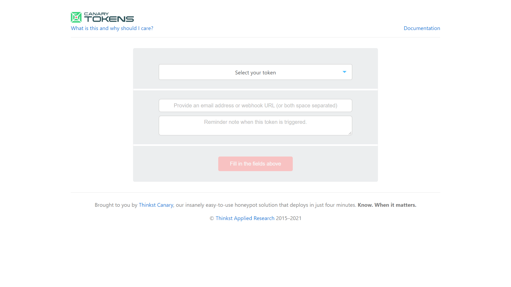

requirements :
Kali Linux
Steps
CanaryTokens WebSite Link

open the website
generate a webtoken
for now iam saying for url
enter yuor email and message
create the canary token
click on manage the token and open once to trigger the token
send it to victims and wait for login info
after click you will get more info about the victims
Like ip
open iplocation To trace info about ip

or use another tool OPRecon to find info
OPRecon
and rock it !!!
BACK TO HOMEPAGE